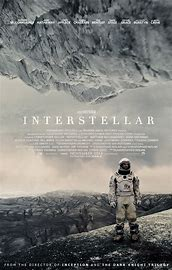

Interstellar

Genius director Christopher Nolan reaches for the stars in Interstellar —
and delivers a soulful, must-see masterpiece, one of the most exhilarating film
experiences so far this century.What a beautiful and epic film is Interstellar,
filled with great performances, tingling our senses with masterful special effects,
daring to be openly sentimental, asking gigantic questions about the meaning of life and
leaving us drained and grateful for the experience.
My Rateing- 10/10 #mustwatch
Dark Knight Rises

The ultimate ending to the ultimate superhero trilogy! Builds incredibly well on the narratives and character-building of its predecessors to deliver more suspense, twists, and payoffs than most finales of its kind. Emotional. Thrilling. The kind of movie that makes you feel something every time you watch.
My Rateing- 8/10 #worthwatch
The Shawshank Redemption

A very simple, yet well executed movie that has achieved cult classic status. Personally i don't find it all that memorable, besides a couple of scenes. It is not bad by any means and it stands as one of the best adaptations of a Steven King novel but neither the music, nor the plot and characters are something worth writing home about.
My Rateing- 9/10 #worthwatch